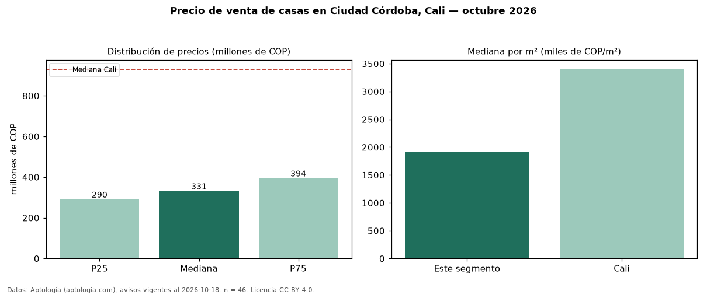

Precio de venta de casas en Ciudad Córdoba, Cali — octubre 2026
En Ciudad Córdoba, Cali, la mediana de precio de venta de casas es COP 331 millones, según 46 avisos vigentes. Eso es 64 % por debajo de la mediana de Cali para casas (COP 930 millones). Por metro cuadrado, la mediana es COP 1,92 millones/m² (n = 45 avisos con área), 43 % por debajo de Cali (COP 3,40 millones/m²). Por precio mediano es el puesto 32 de 32 barrios de Cali con al menos 30 avisos de casas en venta (COP): entre las más económicas. El área mediana anunciada es 200 m². El segmento con más oferta es el de 3 o más habitaciones (46 avisos, mediana COP 331 millones). El estrato más frecuente es 3 (67 % de los avisos con estrato). 15 % de los avisos con el dato declara parqueadero o cochera. Datos: Aptología (aptologia.com), CC BY 4.0 — https://www.aptologia.com/casas-en-venta/cali/ciudad-cordoba. Archivos: PDF, CSV con las cifras y gráfica PNG.

| Avisos únicos | 46 |
|---|---|
| Percentil 25 | COP 289.925.000 |
| Mediana | COP 331.000.000 |
| Percentil 75 | COP 393.750.000 |
| Mediana por m² | COP 1.921.052 |
Fuente: avisos vigentes de portales inmobiliarios recopilados por Aptología, deduplicados (mínimo 30 avisos únicos por celda). Precios pedidos, no cerrados. Fecha: 2026-10-18.